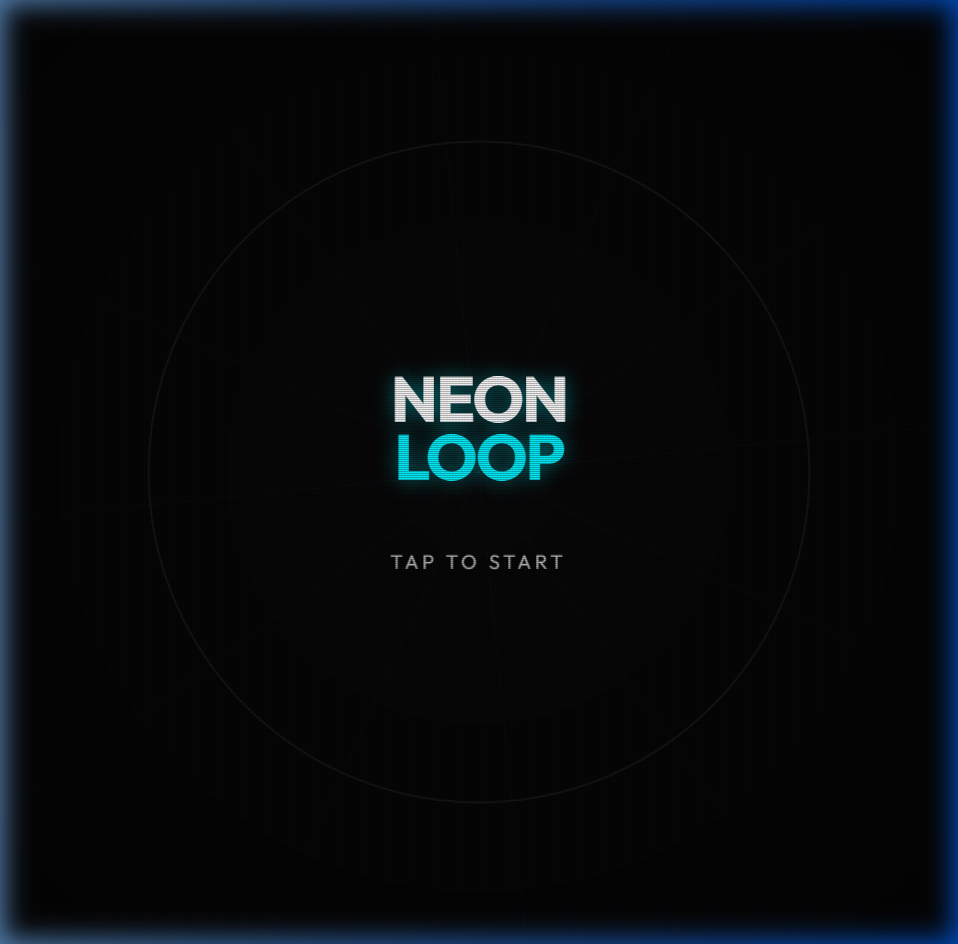
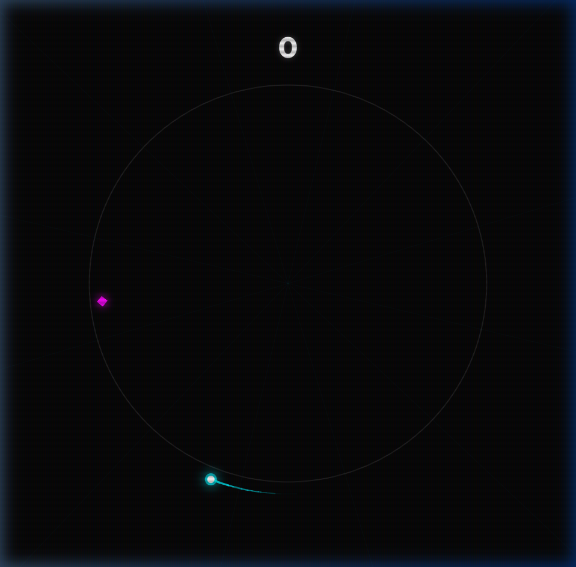
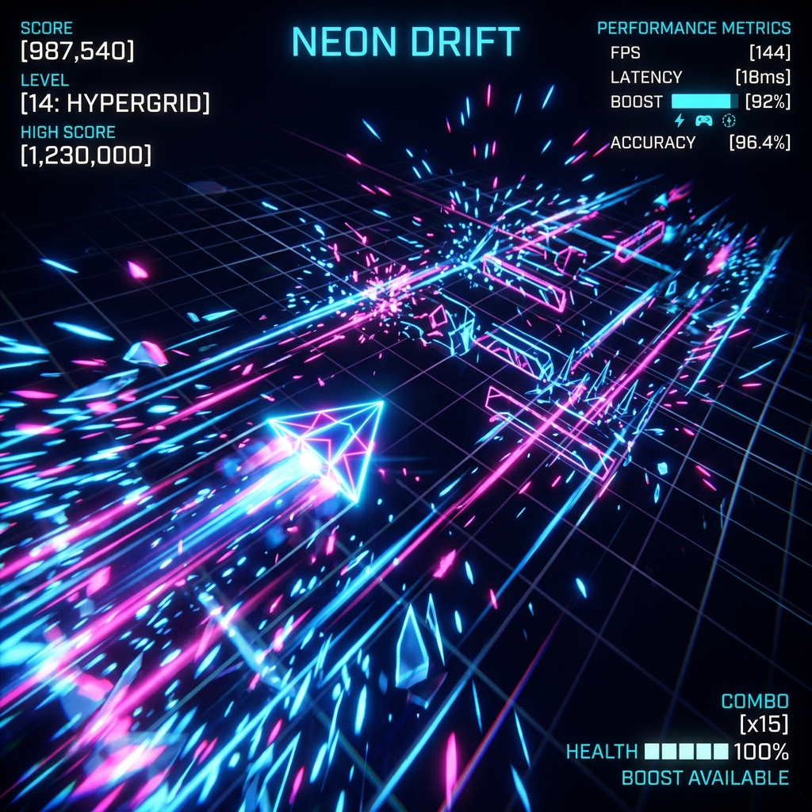
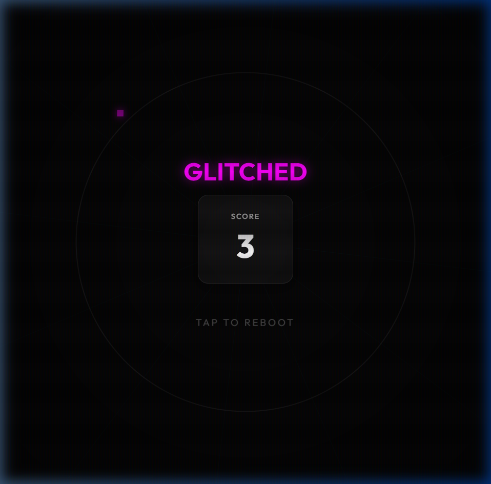

Desenvolvimento de um motor de jogo minimalista em Vanilla JS, focado em síntese de áudio procedural e renderização de alta densidade de partículas.
Bundle Size
< 45KB
Frame Rate
60 FPS
Audio Latency
< 10ms
Assets
0 IMG

O projeto Neon Loop nasceu da necessidade de criar uma experiência imersiva e visualmente impactante que fosse carregada instantaneamente em qualquer dispositivo.
O desafio técnico consistiu em construir toda a estética visual e sonora através de código puro, utilizando a Canvas API para renderização neon e a Web Audio API para síntese de som em tempo real.

Sistema de partículas de alta densidade com interpolação de cores e fade-out dinâmico para simulação de explosões neon.
Síntese matemática de ondas sonoras (osciladores) para criar melodias e efeitos de impacto em tempo real.
Uso de matrizes de transformação e filtros neon via código para criar grids dinâmicos que reagem ao gameplay.

Renderização em tempo real sem uso de bibliotecas externas.

Visualização da lógica de síntese FM para efeitos de impacto.